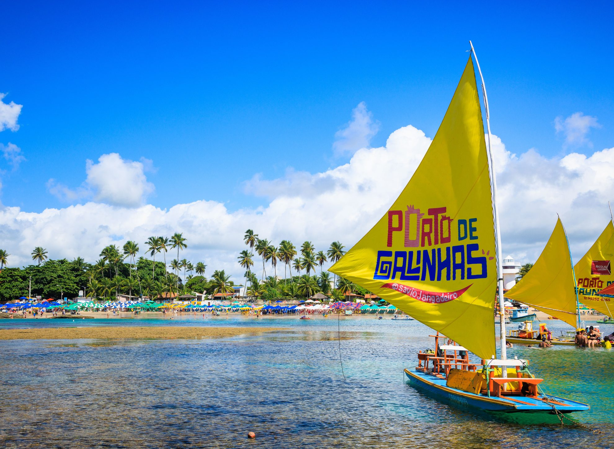
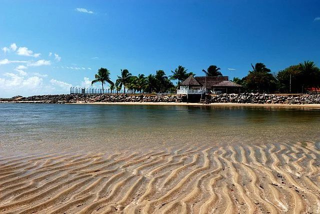
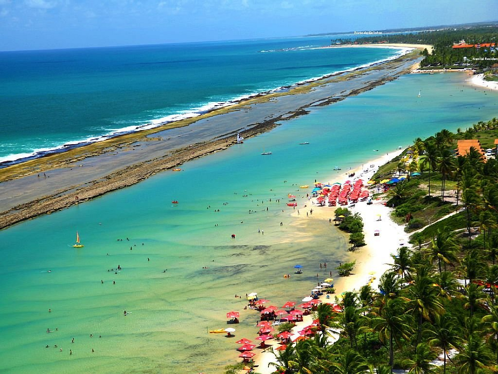

Para os amantes de verão
Descubra 3 destinos imperdíveis em Ipojuca
Se você é do tipo que ama sol, mar e dias leves perto da natureza, Ipojuca é o destino ideal. Perfeito para casais, famílias e viajantes que querem relaxar ou curtir o melhor do litoral, o lugar encanta com as piscinas naturais de Porto de Galinhas, as águas tranquilas da Praia de Muro Alto e o pôr do sol inesquecível no Pontal de Maracaípe. Um cenário perfeito para quem quer viver o verão intensamente.

1. Porto de Galinhas
Um dos destinos de praia mais famosos do Brasil. É conhecido pelas piscinas naturais formadas entre recifes, onde é possível fazer passeios de jangada e observar peixes coloridos em águas cristalinas. A vila também oferece boa estrutura turística, com restaurantes, bares e lojas de artesanato.
Bom para:
- Passeios
- Explorar

2. Pontal de Maracaípe
Um dos cenários mais bonitos da região, onde o rio encontra o mar. O local é famoso pelo pôr do sol, pelos passeios de jangada para observar cavalos-marinhos e pela atmosfera mais tranquila e natural.
Bom para:
- Pôr do sol
- Natureza

3. Muro Alto
Uma praia com águas calmas protegidas por um grande recife, formando uma espécie de piscina natural gigante. É muito procurada por famílias e por quem quer relaxar ou praticar esportes aquáticos.
Bom para:
- Relaxar
- Família
As melhores coisas para fazer em Ipojuca revelam por que o destino é um dos litorais mais procurados do Brasil. Conhecida por suas águas cristalinas e paisagens tropicais, a região reúne algumas das praias mais famosas do país, como Porto de Galinhas, Praia de Muro Alto e Pontal de Maracaípe. Ao longo do ano, visitantes encontram um cenário perfeito para relaxar, explorar piscinas naturais e aproveitar a atmosfera vibrante de um dos destinos mais encantadores do Nordeste.